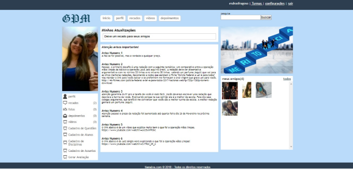
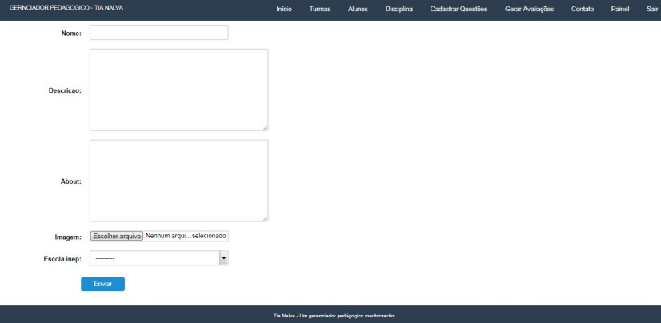
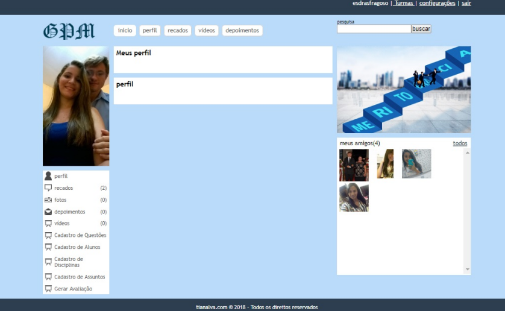
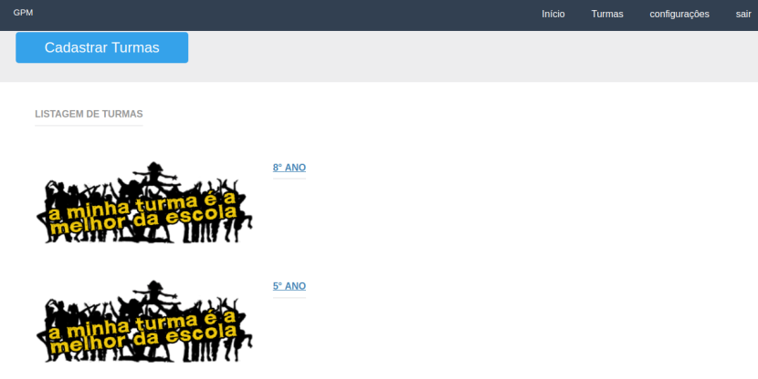

<!DOCTYPE html>
<html lang="en">

<head>
  <meta charset="utf-8">
  <meta content="width=device-width, initial-scale=1.0" name="viewport">
  <title>Gerenciador Pedagógico - Portfolio</title>
  <meta content="" name="description">
  <meta content="" name="keywords">

  <!-- Favicons -->
  <link href="assets/img/favicon.png" rel="icon">
  <link href="assets/img/apple-touch-icon.png" rel="apple-touch-icon">

  <!-- Fonts -->
  <link href="https://fonts.googleapis.com" rel="preconnect">
  <link href="https://fonts.gstatic.com" rel="preconnect" crossorigin>
  <link href="https://fonts.googleapis.com/css2?family=Roboto:ital,wght@0,100;0,300;0,400;0,500;0,700;0,900;1,100;1,300;1,400;1,500;1,700;1,900&family=Poppins:ital,wght@0,100;0,200;0,300;0,400;0,500;0,600;0,700;0,800;0,900;1,100;1,200;1,300;1,400;1,500;1,600;1,700;1,800;1,900&family=Raleway:ital,wght@0,100;0,200;0,300;0,400;0,500;0,600;0,700;0,800;0,900;1,100;1,200;1,300;1,400;1,500;1,600;1,700;1,800;1,900&display=swap" rel="stylesheet">

  <!-- Vendor CSS Files -->
  <link href="assets/vendor/bootstrap/css/bootstrap.min.css" rel="stylesheet">
  <link href="assets/vendor/bootstrap-icons/bootstrap-icons.css" rel="stylesheet">
  <link href="assets/vendor/aos/aos.css" rel="stylesheet">
  <link href="assets/vendor/glightbox/css/glightbox.min.css" rel="stylesheet">
  <link href="assets/vendor/swiper/swiper-bundle.min.css" rel="stylesheet">

  <!-- Main CSS File -->
  <link href="assets/css/main.css" rel="stylesheet">

  <!-- =======================================================
  * Template Name: MyResume
  * Template URL: https://bootstrapmade.com/free-html-bootstrap-template-my-resume/
  * Updated: Jun 29 2024 with Bootstrap v5.3.3
  * Author: BootstrapMade.com
  * License: https://bootstrapmade.com/license/
  ======================================================== -->
</head>

<body class="portfolio-details-page">

  <header id="header" class="header d-flex flex-column justify-content-center">

    <i class="header-toggle d-xl-none bi bi-list"></i>

    <nav id="navmenu" class="navmenu">
      <ul>
        <li><a href="index.html#hero"><i class="bi bi-house navicon"></i><span>Início</span></a></li>
        <li><a href="index.html#about"><i class="bi bi-person navicon"></i><span>Sobre</span></a></li>
        <li><a href="index.html#resume"><i class="bi bi-file-earmark-text navicon"></i><span>Currículo</span></a></li>
        <li><a href="index.html#portfolio"><i class="bi bi-images navicon"></i><span>Portfólio</span></a></li>
        <li><a href="index.html#services"><i class="bi bi-hdd-stack navicon"></i><span>Serviços</span></a></li>
        <li><a href="index.html#contact"><i class="bi bi-envelope navicon"></i><span>Contato</span></a></li>

      </ul>
    </nav>

  </header>

  <main class="main">

    <!-- Page Title -->
    <div class="page-title" data-aos="fade">
      <div class="container">
        <nav class="breadcrumbs">
          <ol>
            <li><a href="index.html">Home</a></li>
            <li class="current">Gerenciador Pedagógico - Detalhes</li>
          </ol>
        </nav>
        <h1>Gerenciador Pedagógico</h1>
      </div>
    </div><!-- End Page Title -->

    <!-- Portfolio Details Section -->
    <section id="portfolio-details" class="portfolio-details section">

      <div class="container" data-aos="fade-up">

        <div class="portfolio-details-slider swiper init-swiper">
          <script type="application/json" class="swiper-config">
            {
              "loop": true,
              "speed": 600,
              "autoplay": {
                "delay": 5000
              },
              "slidesPerView": "auto",
              "navigation": {
                "nextEl": ".swiper-button-next",
                "prevEl": ".swiper-button-prev"
              },
              "pagination": {
                "el": ".swiper-pagination",
                "type": "bullets",
                "clickable": true
              }
            }
          </script>
          <div class="swiper-wrapper align-items-center">

            <div class="swiper-slide">
              
            </div>

            <div class="swiper-slide">
              
            </div>

            <div class="swiper-slide">
              
            </div>

            <div class="swiper-slide">
              
            </div>

          </div>
          <div class="swiper-button-prev"></div>
          <div class="swiper-button-next"></div>
          <div class="swiper-pagination"></div>
        </div>

        <div class="row justify-content-between gy-4 mt-4">

          <div class="col-lg-8" data-aos="fade-up">
            <div class="portfolio-description">
              <h2>Visão Geral</h2>
              <p>
                O Gerenciador Pedagógico (GP) é uma plataforma inovadora de gestão educacional, projetada para melhorar os resultados de aprendizagem através da aplicação de pedagogia meritocrática. Desenvolvido como parte do meu curso de Sistemas de Informação na **Universidade Federal do Piauí**, o sistema foi implementado na escola **Jerônimo Alves Bezerra** para avaliar o desempenho dos alunos.
              </p>
              <p>
                A plataforma oferece um banco de questões que adapta as avaliações ao perfil dos alunos, fornece relatórios detalhados para os educadores e classifica os alunos com base em seu desempenho acadêmico, promovendo uma competição saudável. O objetivo do sistema é ajudar as escolas a gerenciar seus processos pedagógicos de forma mais eficaz.
              </p>

              <h3>Principais Funcionalidades</h3>
              <ul>
                <li>Avaliações personalizadas baseadas no perfil do aluno</li>
                <li>Sistema de classificação dos alunos para acompanhamento de desempenho</li>
                <li>Relatórios detalhados de progresso para professores e gestores</li>
              </ul>

              

              <div class="testimonial-item">
                <p>
                  <i class="bi bi-quote quote-icon-left"></i>
                  <span>Algumas lições foram aprendidas no decorrer deste projeto, mas é de se destacar o fato
                    de não existir soluções simplistas ou mesmo pragmáticas quando se trata de educação já
                    que são inúmeras as variáveis a serem levadas em consideração. Desta forma, pressupor
                    que um software seria capaz de solucionar todos os problemas da educação ou mesmo do
                    processo de ensino e aprendizado é uma ingenuidade que não cabe no campo científico.
                    Mas, a evolução deste processo por meio de uma plataforma web de fácil utilização e
                    acessibilidade, contribui mais que satisfatoriamente e torna o GP uma ferramenta bastante
                    útil nas mãos dos professores.</span>
                  <i class="bi bi-quote quote-icon-right"></i>
                </p>
                <div>
                  
                  <h3>Marinalva do Vale Fragoso</h3>
                  <h4>Diretora</h4>
                </div>
              </div>

              <p>
                O grande desafio deste projeto, foi desenvolver um software capaz de executar as funções de um coordenador pedagógico. No entanto, após delimitar que seria uma plataforma
web baseada no conceito de rede social e que as funções de gerência pedagógica agiriam
em uma camada superior, transparecendo aos usuários que eles estavam sendo conduzidos
e orientados por um gerenciador, os processos fluiram na aplicação naturalmente.
              </p>

              

            </div>
          </div>

          <div class="col-lg-3" data-aos="fade-up" data-aos-delay="100">
            <div class="portfolio-info">
              <h3>Informações do Projeto</h3>
              <ul>
                <li><strong>Categoria:</strong> Aplicação Web Educacional</li>
                <li><strong>Tecnologias:</strong> PHP, MySQL, MongoDB, JavaScript</li>
                <li><strong>Cliente:</strong> Escola Jerônimo Alves Bezerra</li>
                <li><strong>Data do Projeto:</strong> 21 de Março, 2018</li>
                <li><a href="https://ufpi.br/arquivos_download/arquivos/PICOS/Not%C3%ADcias/PICOS_2022/Biblioteca/2018/Sistemas_da_Informa%C3%A7%C3%A3o_2018/Edras_Fragoso_da_Silva_Neto.pdf" target="_blank" class="btn-visit align-self-start">Visitar Monografia</a></li>
              </ul>
            </div>
          </div>

        </div>

      </div>

    </section><!-- /Portfolio Details Section -->

  </main>

  <footer id="footer" class="footer position-relative light-background">
    <div class="container">
      <h3 class="sitename">Esdras Fragoso da Silva Neto</h3>
      <p>Sou um desenvolvedor Back-end com mais de 14 anos de experiência, especializado em PHP e tecnologias web. Minha missão é transformar conhecimento em soluções práticas e eficientes para impulsionar o sucesso dos projetos em que atuo..</p>
      <div class="social-links d-flex justify-content-center">
        <a href="https://github.com/fsdrasfragoso"><i class="bi bi-github"></i></a>
              <a href="https://www.linkedin.com/in/esdras-fragoso-5b44a868/"><i class="bi bi-linkedin"></i></a>
              <a href="https://www.instagram.com/esdrasfragoso/"><i class="bi bi-instagram"></i></a>
              <a href="https://www.facebook.com/esdras.fragoso.silva.neto"><i class="bi bi-facebook"></i></a>
      </div>
      <div class="container">
        <div class="copyright">
            <span>&copy; 2024 Esdras Fragoso</span> <strong>Todos os Direitos Reservados</strong>
        </div>
        
      </div>
    </div>
  </footer>

  <!-- Scroll Top -->
  <a href="#" id="scroll-top" class="scroll-top d-flex align-items-center justify-content-center"><i class="bi bi-arrow-up-short"></i></a>

  <!-- Preloader -->
  <div id="preloader"></div>

  <!-- Vendor JS Files -->
  <script src="assets/vendor/bootstrap/js/bootstrap.bundle.min.js"></script>
  <script src="assets/vendor/php-email-form/validate.js"></script>
  <script src="assets/vendor/aos/aos.js"></script>
  <script src="assets/vendor/typed.js/typed.umd.js"></script>
  <script src="assets/vendor/purecounter/purecounter_vanilla.js"></script>
  <script src="assets/vendor/waypoints/noframework.waypoints.js"></script>
  <script src="assets/vendor/glightbox/js/glightbox.min.js"></script>
  <script src="assets/vendor/imagesloaded/imagesloaded.pkgd.min.js"></script>
  <script src="assets/vendor/isotope-layout/isotope.pkgd.min.js"></script>
  <script src="assets/vendor/swiper/swiper-bundle.min.js"></script>

  <!-- Main JS File -->
  <script src="assets/js/main.js"></script>

</body>

</html>